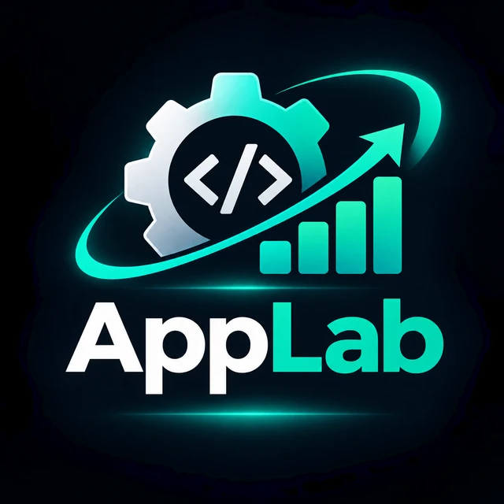

App su misura per il tuo lavoro.
Creiamo applicazioni web per liberi professionisti, artigiani, commercianti, attività ricettive e ristorazione, ditte individuali e PMI. Strumenti semplici che tolgono carta, fogli Excel e compiti ripetitivi, e ti restituiscono tempo.
- Agende e prenotazioni
- Preventivi
- Clienti
- Magazzino

Non un software generico. Il tuo.
I programmi “per tutti” ti obbligano a cambiare il modo di lavorare. Noi facciamo il contrario: partiamo da come lavori tu e costruiamo lo strumento intorno a te.
Su misura
Solo le funzioni che ti servono, con le parole e i passaggi del tuo mestiere.
Meno lavoro ripetitivo
Preventivi, promemoria, schede clienti, scadenze: ciò che oggi fai a mano può diventare automatico.
Da qualsiasi dispositivo
Si usano dal browser di PC, tablet e smartphone. Non c’è nulla da installare.
Un solo interlocutore
Parli con chi progetta e sviluppa, in italiano semplice, senza gergo tecnico.
Pensato per chi ha un’attività da portare avanti
Non servono competenze informatiche. Serve solo sapere cosa vorresti fosse più semplice.
- Liberi professionisti – consulenti, tecnici, terapisti, formatori
- Artigiani – installatori, officine, laboratori, imprese edili
- Commercianti – negozi, botteghe, attività di vendita al dettaglio
- Attività ricettive e ristorazione – hotel, B&B, agriturismi, ristoranti, bar, pizzerie
- Ditte individuali – piccole attività che fanno tutto da sole
- Piccole e medie imprese – team che hanno superato i fogli di calcolo
Un’idea ancora vaga?
Va benissimo. Molti progetti nascono da una frase come “vorrei non dover rifare sempre le stesse cose”. Ti aiutiamo a trasformarla in uno strumento concreto.
Come funziona, in breve
In sintesi: dal primo confronto alla consegna e al supporto.
Ascolto
Ci racconti la tua giornata e dove perdi più tempo.
Proposta
Ti diciamo cosa faremo, in quanto tempo e a che costo.
Sviluppo a tappe
Vedi l’avanzamento man mano e puoi correggere la rotta.
Consegna e supporto
Ti affianchiamo all’avvio e dopo.
I nostri progetti
Oltre ai lavori su misura, sviluppiamo strumenti nostri pensati per il mondo del lavoro.
Timone
Controllo e analisi aziendale per le imprese italiane: bilanci, indici, budget e scenari in un unico strumento.
Scopri Timone, si apre in una nuova schedaMaggiordomo-IA
Un assistente personale con intelligenza artificiale per le attività di ogni giorno.
Assistente del giardino
Giardino, orto e prato: schede, calendario delle attività, meteo e consigli, anche senza connessione.
Hai qualcosa che vorresti semplificare?
Raccontaci come lavori oggi. Il primo confronto è gratuito e senza impegno.
Parliamone